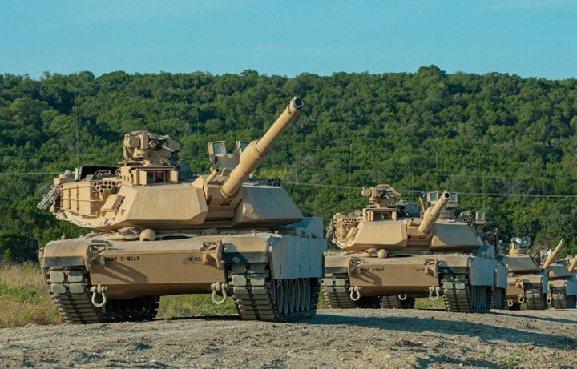
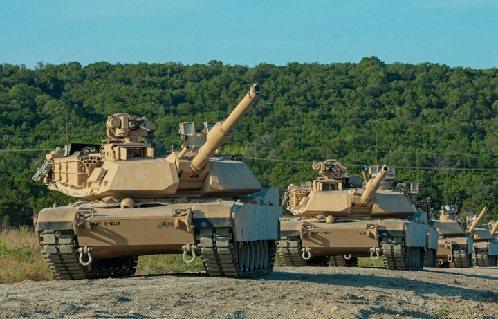

Tankning asosiy qismlari: zirxli korpus, minora, qurolyarogʻ kompleksi (asosiy va yordamchi qurollar, oʻqdori), kuzatish asboblari, moʻljalga olish va boshqa moslamalar, kuch (motor) qurilmasi, kuch uzatkichi (transmissiya), yurish qismi, elektr jihozlar, aloqa tizimi, yongʻinga qarshi jihozlar, ommaviy qirgʻin qurollarining shikastlovchi omillarga qarshi himoya tizimlari va boshqa Korpus va minora Tankning barcha tarkibiy qismlarini birlashtiradi hamda ekipaj, agregatlar va yenilgʻini shikastlanish va zararlanishdan saklaydi. Minora qoʻlda, elektr yoki elektrgidravlik yuritmalar yordamida aylantiriladi. Tankning korpusi va minorasi legirlangan zirh poʻlati listlarini bir-biriga payvandlab yasaladi, baʼzan, yaxlit quyma korpusli Tank ham uchraydi. Minora, odatda, quyma holda boʻladi (baʼzi hollarda payvandlab) yasaladi. Tanklar snaryadga qarshi (faqat yengil Tanklar — oʻqqa qarshi) zirhlanadi. Hozirgi Tanklar korpusining ichki qismi boshqaruv boʻlmasi (unga mexanikhaydovchi joylashadi), jangovar boʻlma (unga T. komandiri, toʻp otuvchi, oʻklovchi joylashadi, agar oʻqlovchiavtomat mavjud boʻlsa, oʻqlovchi boʻlmaydi), shuningdek motortransmissiya boʻlmasiga ajraladi. Yonilgʻi, odatda, hamma boʻlmalarga oʻrnatilgan baklarda, baʼzan korpusdan tashqaridagi baklarda saklanadi.